| Dataset | Source | Content | Used as |
|---|---|---|---|
| ACLED Myanmar extract | Armed Conflict Location & Event Data, via eLearn | 87,109 events, 1 Jan 2021 to 30 Sep 2025, 31 fields | Point events, aggregated to counts |
| Township boundaries | MIMU GeoNode, PCode release 9.4 | 330 townships, 1:250,000, WGS 84 | Areal unit and spatial weights |
Take-home Exercise 2: Geospatial Analytics for Peace
Local spatial association and emerging hot spots of armed conflict across Myanmar’s 330 townships, January 2021 to September 2025
Local Moran’s I, Getis-Ord Gi*, Mann-Kendall and emerging hot spot analysis of ACLED political-violence events in Myanmar at township level, with a spatial Markov test of whether violence spreads to neighbouring townships.
Abstract
I analyse 53,907 political-violence events recorded by ACLED in Myanmar between 1 January 2021 and 30 September 2025, counted in each of the 330 townships of the MIMU 9.4 boundary set, and ask three questions: where violence clusters, how its geography is changing, and whether it spreads from one township to the next.
Violence is strongly clustered. Global Moran’s I sits between 0.56 and 0.71 for every variable. Local Moran’s I and Gi* agree on one dominant core, the central dry zone of Sagaing, Magway and Mandalay, which holds between half and nine in ten of the significant High-High townships depending on the event type, with a second belt running down the Thai border through Kayin, Mon and Tanintharyi. The cold spots are the Ayeyarwady delta, Yangon and the eastern Shan hills, and I argue that the last of these is partly an artefact of reporting rather than peace.
Over time the picture is of a war that has stopped spreading outward from cities and is deepening where it already is. Yangon’s townships show a significant downward Gi* trend almost without exception. The intensifying hot spots are in the dry zone (Madaya, Myingyan, Seikphyu, Yesagyo, Ngazun) and at Dawei, and the consecutive hot spots trace the southeastern front from Kyaukkyi to Myawaddy. Explosions and remote violence, increasingly air and drone strikes by the military, overtook battles as the most common event type in 2023.
As a value-added analysis I fitted a spatial Markov model. A quiet township becomes active in the next quarter 9% of the time when no neighbour is active and 36% of the time when most neighbours are, a gap that survives a spatial permutation test, state and quarter fixed effects, and three activity thresholds. Since Operation 1027 an isolated outbreak has become rarer (12% to 4%) while spread into a township surrounded by fighting has not changed, which is the signature of a war fought along contiguous fronts.
R sf sfdep spdep ACLED Local Moran’s I Gi* Mann-Kendall EHSA Spatial Markov
Executive summary · Repository
1 Introduction and study context
Myanmar has been at war with parts of itself since independence in 1948, mostly as a contest between the national army, the Tatmadaw, and ethnic armed organisations in the hills that ring the central plain. The coup of 1 February 2021 changed the shape of that war. When peaceful protest was met with live fire, a generation of young people in the Bamar heartland, which had been largely spared the ethnic conflicts, took up arms as local People’s Defence Forces. The war came to the plains.
That shift is what makes this exercise a geographical question rather than only a humanitarian one. Before 2021 the map of violence was largely the map of the borderlands. Since 2021 it has had to be redrawn, and it has kept moving: urban resistance in Yangon in 2021, the rise of the dry-zone insurgency in Sagaing and Magway, the Arakan Army’s offensive in Rakhine, and Operation 1027, the Three Brotherhood Alliance offensive that began in northern Shan on 27 October 2023 and cost the military more territory in months than it had lost in decades.
Peace-building organisations work at township level. Township is the unit at which humanitarian access is negotiated, aid is planned and local ceasefires are brokered, and it is the finest administrative unit for which boundaries are maintained consistently, by the Myanmar Information Management Unit (MIMU). So I analyse the conflict at that scale, and I ask what a peace-building organisation could defensibly do with the result.
2 Research question and objectives
Where does armed conflict in Myanmar cluster, how is that geography changing, and does it spread from township to township?
- Locate statistically significant hot spots, cold spots and spatial outliers of political violence at township level, separately for battles, explosions and remote violence, violence against civilians, and reported fatalities (Local Moran’s I and Getis-Ord Gi*).
- Describe where, how fast and in what pattern the geography is evolving, using a quarterly space-time cube, the Mann-Kendall trend test on each township’s Gi* series, and emerging hot spot analysis (EHSA).
- Value-added. Test whether violence diffuses by contagion: whether a quiet township is more likely to become violent when its neighbours already are, after allowing for regional and national conditions (a spatial Markov chain).
3 Data and study design
Unit of analysis. The township. Its boundaries come from MIMU release 9.4, verified from the PCode_V field on every polygon. I fetch them directly from MIMU’s WFS endpoint inside the pipeline, so the version is not in doubt.
What counts as armed conflict. ACLED codes six event types. I keep the three it groups as political violence: battles, explosions/remote violence and violence against civilians. Protests and riots are not armed conflict, and strategic developments (arrests, base movements, territory changing hands without fighting) are not violent events. Mixing them in would let the 2021 protest wave dominate the early quarters for reasons unrelated to the war.
Variables. Five counts per township: all political violence, each of the three types, and the sum of reported fatalities.
Space-time cube. Township by calendar quarter: 330 townships by 19 quarters, 6,270 cells, with an explicit zero wherever nothing was recorded. The study window ends on 30 September 2025, the last day of a quarter, so there is no partial final period. I chose quarters over months for three reasons. About 3.9% of events are dated only to the week or month, which a month boundary would split arbitrarily. A monthly cube is mostly zeros in quiet townships, which gives the Mann-Kendall test little to work with. And a quarter matches the planning cycle of the organisations this is meant for. I rebuild the analysis on a monthly cube as a check (Section 8.5).
Projection. WGS 84 / UTM zone 47N (EPSG:32647). Myanmar’s centroid, about 96.5°E, lies in zone 47. Contiguity does not need a projection, but the snapping distance, the nearest-neighbour weights and township areas do.
4 Data preparation and quality assessment
The brief warns that the data are full of land mines. These are the ones I found, in the order the pipeline meets them.
| Step | Rows remaining | Removed | Reason |
|---|---|---|---|
| ACLED extract as supplied | 87,109 | every row in the eLearn file | |
| Inside the study window | 87,109 | 0 | 1 Jan 2021 to 30 Sep 2025, checked rather than assumed |
| Political violence only | 54,004 | 33,105 | battles, explosions and remote violence, violence against civilians |
| Country is Myanmar | 54,000 | 4 | removes events ACLED codes to the Indian Ocean |
| Location known to township or better | 53,907 | 93 | geo_precision 3 events sit on a regional centroid |
| Inside a township, or within 5 km of one | 53,907 | 0 | points beyond the 1:250k coastline are offshore |
Events in the sea. 6 rows have country = "Indian Ocean". They are maritime incidents ACLED attaches to the Myanmar file. I removed them by the country field rather than letting the spatial join decide, so the reason is on record.
Events placed on a regional centroid. ACLED’s geo_precision is 1 when the event is located to a named town or village, 2 when it is near one, and 3 when only the larger region is known and the event is placed at that region’s centroid. Political violence has 93 events at precision 3. Counting them would pile false violence onto whichever township contains a district’s centroid, so I drop them. At 0.2% of events, the loss is small; the distortion from keeping them would not be.
Join by location, not by name. ACLED records its own admin3 name for each event, and it is tempting to join on it. 111 political-violence rows have no admin3 at all, and names are romanised inconsistently across sources. So I join every event to the township polygon that contains its coordinates, and use the names only to audit the join afterwards (Table 3). The agreement is reassuring: ACLED evidently codes against MIMU’s own gazetteer, and only 8 events carry a name that differs from the township they fall in, each a point that lies a few hundred metres across a boundary. The 102 events with no name all fall in the city townships of Mandalay, Yangon and Nay Pyi Taw, and the spatial join recovers them. A name join would have lost every one.
| ACLED admin3 | Spatial join | Events |
|---|---|---|
| (missing) | Chanayethazan | 68 |
| (missing) | Bahan | 21 |
| (missing) | Za Bu Thi Ri | 13 |
| Pangsang | Pangsang (Panghkam) | 4 |
| Kawhmu | Twantay | 2 |
| Pekon | Pinlaung | 1 |
| Toungup | Ann | 1 |
Points just off the coast. 8 events fall outside every polygon. All are on islands or river mouths that the 1:250,000 coastline generalises away, the furthest 0.49 km from land. I snap events to the nearest township within 5 km, which recovers all eight without risking real offshore incidents.
Fatalities are not like the counts. ACLED codes fatalities conservatively and from reports, and Myanmar’s reporting environment is hostile. The distribution is extreme: the top 1% of events account for 21% of all reported deaths, and the largest single values (400, 350, 201) are territorial takeovers in Rakhine and Shan where the death toll covers weeks of fighting. I keep fatalities as a variable because lethality matters for protection work, but I treat its local statistics as less reliable than the event counts, and I never use it to build the space-time cube.
Zeros that may not be zeros. 8 townships record no political violence at all in nearly five years. Seven of them are in the Wa and Mongla self-administered areas of eastern and northern Shan, held by the United Wa State Army and the National Democratic Alliance Army, ceasefire groups that tightly control information. The eighth is Cocokyun, a small island. A zero in Wa territory partly reflects calm under ceasefire, but it also reflects that almost nothing is reported from there. This matters later, because those townships anchor a cold spot.
code
lab <- states |> st_point_on_surface() |>
mutate(ST = sub(" \\(", "\n(", ST))
ggplot(tsp) +
geom_sf(aes(fill = pv), colour = PAL$border, linewidth = 0.05) +
geom_sf(data = states, fill = NA, colour = PAL$ink, linewidth = 0.3) +
geom_sf_label(data = lab, aes(label = ST), size = 2.3, colour = PAL$ink,
family = "Helvetica", lineheight = 0.9, fill = alpha("#FFFFFF", 0.75),
label.size = 0, label.padding = unit(1.2, "pt")) +
scale_fill_count(name = "Political-violence events", v = tsp$pv) +
scalebar_layer(bb) + north_layer(bb) +
coord_sf(expand = FALSE, datum = NA) + theme_map() +
theme(legend.key.width = unit(40, "pt"))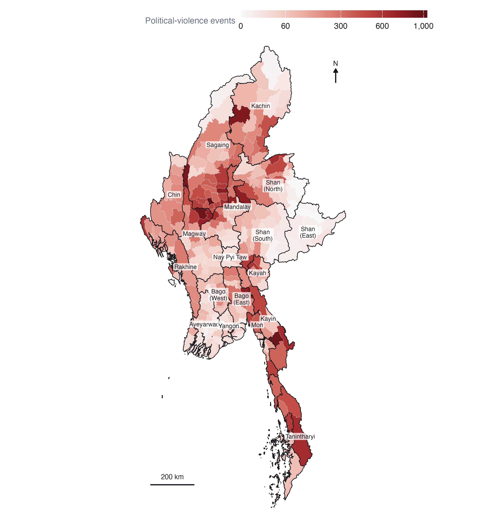
The map has a clear centre of gravity. The densest band of townships runs through the central dry zone, the lowland Bamar heartland of southern Sagaing, Magway and Mandalay, which until 2021 had seen little armed conflict. Monywa and Kale in Sagaing and Myaing in Magway are three of the five busiest townships in the country, each with more than 850 events; the other two are Kawkareik on the Thai border and Hpakant in Kachin’s jade-mining district. A second band follows the Thai border south through Kayin, Mon and Tanintharyi. The quietest areas are the Ayeyarwady delta, the Yangon hinterland and eastern Shan. Kachin and northern Shan are active, but the activity concentrates in fewer townships.
Raw counts reward size. Large townships have more room for events, and the choropleth’s eye is drawn to them. That is acceptable for this purpose, because the township is the unit at which programmes operate, but it is the reason I rely on the local statistics below rather than on this map to say where violence is unusual.
5 Analytical assumptions and methodological decisions
| Decision | Choice | Why | Checked against |
|---|---|---|---|
| Neighbours | Queen contiguity, row-standardised | Townships interact across shared borders; a fighting front crosses them | 6-nearest neighbours |
| Islands | Linked to nearest township | 3 townships share no boundary; dropping them removes real places | - |
| Transformation | log(1 + count) | Counts are heavily skewed; extremes would decide whole neighbourhoods | Raw counts |
| Inference | 999 conditional permutations | No normality assumption for skewed counts | - |
| Significance | p < 0.05, as the brief requires | Reported alongside the false discovery rate | FDR-adjusted p |
| Time step | Calendar quarter | Week- and month-dated events; sparse monthly series | Monthly cube |
| EHSA rule threshold | 0.05 | sfdep defaults to 0.01; the brief sets 0.05 | - |
Spatial weights. Queen contiguity treats two townships as neighbours if they share any boundary point. That is the natural definition for conflict, which moves across land borders along roads and rivers. 3 townships have no contiguous neighbour: Chaungzon, Munaung, Cocokyun. Left alone, they would split the network into four disconnected pieces and give the permutation tests empty rows. I link each to its nearest township by centroid (Chaungzon to Mawlamyine; Munaung to Ramree; Cocokyun to Labutta) and make the links symmetric, which leaves one connected network with a median of 5 neighbours. For Gi* each township is also included in its own neighbourhood, which is what distinguishes Gi* from Gi.
Transformation. Political-violence counts run from 0 to 1,039 with a median of 79. Local Moran’s I is a product of a township’s deviation from the mean and its neighbours’. On raw counts, Monywa’s 1,039 events would make every neighbour of Monywa look like part of a cluster whatever its own level. Taking log(1 + count) keeps the ordering and the zeros, and lets the statistic describe the bulk of townships rather than the five largest. I re-ran everything on raw counts to see what changes (Table 6).
Permutation inference. Analytical p-values for Local Moran’s I assume normality, which skewed counts violate. I use conditional permutation instead: each township’s value is held fixed while its neighbours’ values are drawn at random from the rest of the map 999 times, so the smallest attainable p-value is 0.001.
Many tests at once. Testing 330 townships at 5% will produce about 16 false positives by chance alone. The brief asks for the p < 0.05 maps and I give them, but I also report how many townships survive a false discovery rate correction, so the reader can see which clusters are robust and which are at the margin.
6 Geographical distribution over time
code
mon <- qa$monthly |> mutate(type = var_lab(var))
air <- st_drop_geometry(ev) |> filter(sub_event_type == "Air/drone strike") |> count(month)
type_cols <- c(PAL$accent, "#D0543F", PAL$cool) |> setNames(VAR_LABELS[c("battles", "erv", "vac")])
marks <- list(
geom_vline(xintercept = c(COUP_DATE, OP1027_DATE), colour = PAL$muted, linewidth = 0.3, linetype = "22"),
annotate("text", x = c(COUP_DATE, OP1027_DATE) + 20, y = Inf, vjust = 1.4, hjust = 0,
label = c("Coup", "Operation 1027"), size = 2.9, colour = PAL$muted, family = "Helvetica"))
p1 <- ggplot(mon, aes(month, n, colour = type)) + geom_line(linewidth = 0.55) + marks +
scale_colour_manual(values = type_cols, name = NULL) +
scale_x_date(date_breaks = "1 year", date_labels = "%Y") +
labs(x = NULL, y = "Events per month") + theme_ex02()
p2 <- ggplot(air, aes(month, n)) + geom_col(fill = PAL$accent_dk, width = 25) + marks[1] +
scale_x_date(date_breaks = "1 year", date_labels = "%Y") +
labs(x = NULL, y = "Air and drone\nstrikes") + theme_ex02()
p1 / p2 + plot_layout(heights = c(2.2, 1))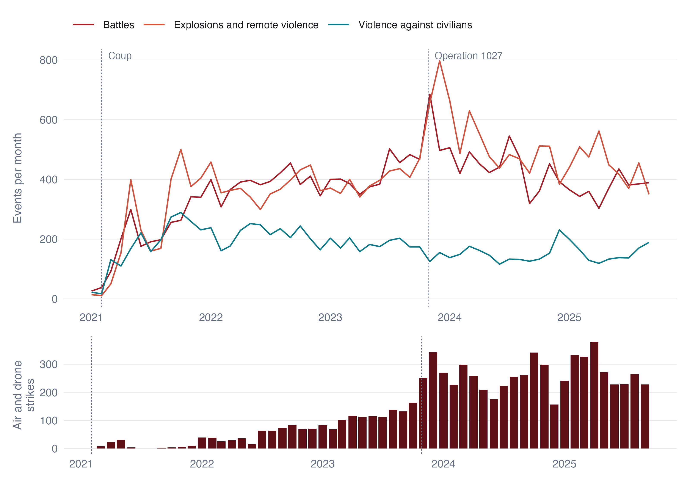
Violence climbed steeply through 2021 as the armed resistance formed, then held at around 1,000 events a month (between 824 and 1,126) from 2022 until the autumn of 2023. Operation 1027 produced the largest spike in the record, in November 2023, and the level has eased since, though in 2025 it is still above anything in 2021.
The composition changed more than the level. Explosions and remote violence overtook battles as the most common event type during 2023 and stayed ahead. Behind that crossing is the military’s turn to the air. ACLED records 88 air or drone strikes in 2021 and 2,977 in 2024. The share of explosions and remote violence initiated by the military rose from 16% to 82% in 2025. Violence against civilians, by contrast, fell as a share of the total. The war became one fought from a distance, which matters for the maps that follow, because an air strike lands where the military chooses to strike, not where the fighting is.
code
sq <- P$cube |> left_join(tsp_attr |> select(TS_PCODE, ST), by = "TS_PCODE") |>
group_by(ST, period) |> summarise(pv = sum(pv), .groups = "drop") |>
group_by(ST) |> mutate(rel = pv / max(pv), tot = sum(pv)) |> ungroup() |>
mutate(ST = reorder(ST, tot))
tots <- sq |> distinct(ST, tot)
ggplot(sq, aes(period, ST, fill = rel)) +
geom_tile(colour = PAL$border, linewidth = 0.4, height = 0.92) +
geom_text(data = tots, aes(x = max(sq$period) + 75, y = ST, label = fmt_n(tot)),
inherit.aes = FALSE, hjust = 0, size = 2.7, colour = PAL$muted, family = "Helvetica") +
scale_fill_gradientn(colours = PAL$seq, name = "Share of the region's busiest quarter",
labels = label_percent()) +
scale_x_date(date_breaks = "1 year", date_labels = "%Y", expand = expansion(add = c(0, 260))) +
labs(x = NULL, y = NULL) + theme_ex02(grid = "none") +
theme(legend.key.width = unit(40, "pt"))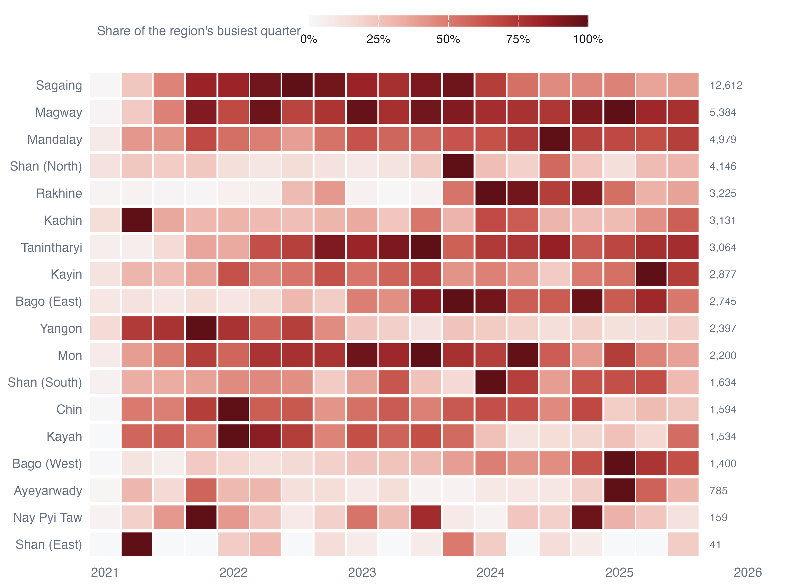
Each region has its own clock. Yangon peaked in the first year, when the resistance was an urban one of bombings and targeted killings, and has faded ever since. Sagaing, the single largest theatre, ramped up through 2021 and peaked in 2022. Rakhine was nearly silent until a brief round of fighting in late 2022, then the Arakan Army’s offensive from November 2023 turned it into one of the most violent regions in the country. Northern Shan peaks sharply in the Operation 1027 quarter and settles after the ceasefire brokered by China in January 2024. Kachin is the opposite case, busiest in 2021 Q2. Mandalay, Magway, Bago West and Kayin reach their busiest quarters only in 2024 or 2025.
These different clocks are the reason a single map of five-year totals is not enough, and the reason the space-time analysis in Section 8 is needed.
7 Local measures of spatial association
7.1 Global autocorrelation first
| Variable | Moran’s I | Permutation p |
|---|---|---|
| All political violence | 0.665 | < 0.001 |
| Battles | 0.704 | < 0.001 |
| Explosions and remote violence | 0.620 | < 0.001 |
| Violence against civilians | 0.564 | < 0.001 |
| Reported fatalities | 0.709 | < 0.001 |
Global Moran’s I between 0.56 and 0.71 says that a township’s violence is very well predicted by its neighbours’. That justifies looking for local clusters, but on its own says nothing about where they are.
7.2 Local Moran’s I
code
lm <- with_geo(L$lisa) |> mutate(var = var_lab(var), cls = factor(cls, names(LISA_COLS())))
ggplot(lm) +
geom_sf(aes(fill = cls), colour = PAL$border, linewidth = 0.04) +
geom_sf(data = states, fill = NA, colour = PAL$ink, linewidth = 0.18) +
facet_wrap(~var, nrow = 1, labeller = label_wrap_gen(16)) +
scale_fill_manual(values = LISA_COLS(), name = NULL, drop = FALSE) +
coord_sf(expand = FALSE, datum = NA) + theme_map(base_size = 10)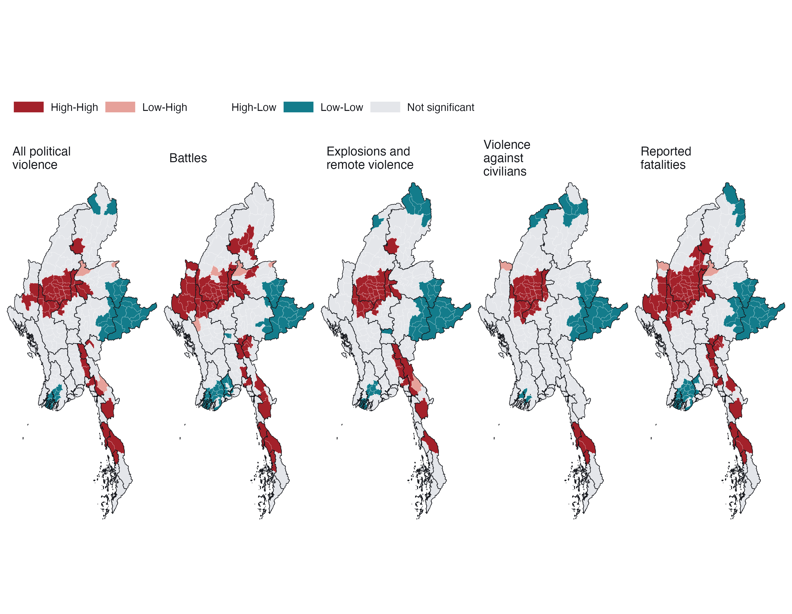
What the maps say. For every variable the largest High-High cluster is the same block of the dry zone: southern Sagaing, northern Magway and western Mandalay. Between 52% and 88% of each variable’s High-High townships lie in those three regions. A second High-High belt runs down the eastern border from Kayin through Mon to Tanintharyi. Battles add a western belt in Chin and a northern patch in Kachin, matching the ethnic armed organisations there; violence against civilians is the most concentrated, almost entirely in the dry zone and Tanintharyi.
Low-Low clusters fall in eastern Shan (including the Wa and Mongla areas discussed above), the Ayeyarwady delta and around Yangon, and in the far north of Kachin for explosions and civilian targeting. The few Low-High townships, such as Hlaingbwe in Kayin and Mabein in Shan, are quieter places beside intense fighting: candidates for watching rather than for reassurance.
There are no significant High-Low outliers at all. Violence in Myanmar does not form isolated islands. Wherever a township is unusually violent, its neighbours are too.
7.3 Getis-Ord Gi*
code
gm <- with_geo(L$gi) |> mutate(var = var_lab(var), cls = factor(cls, names(GI_COLS())))
ggplot(gm) +
geom_sf(aes(fill = cls), colour = PAL$border, linewidth = 0.04) +
geom_sf(data = states, fill = NA, colour = PAL$ink, linewidth = 0.18) +
facet_wrap(~var, nrow = 1, labeller = label_wrap_gen(16)) +
scale_fill_manual(values = GI_COLS(), name = NULL, drop = FALSE) +
coord_sf(expand = FALSE, datum = NA) + theme_map(base_size = 10)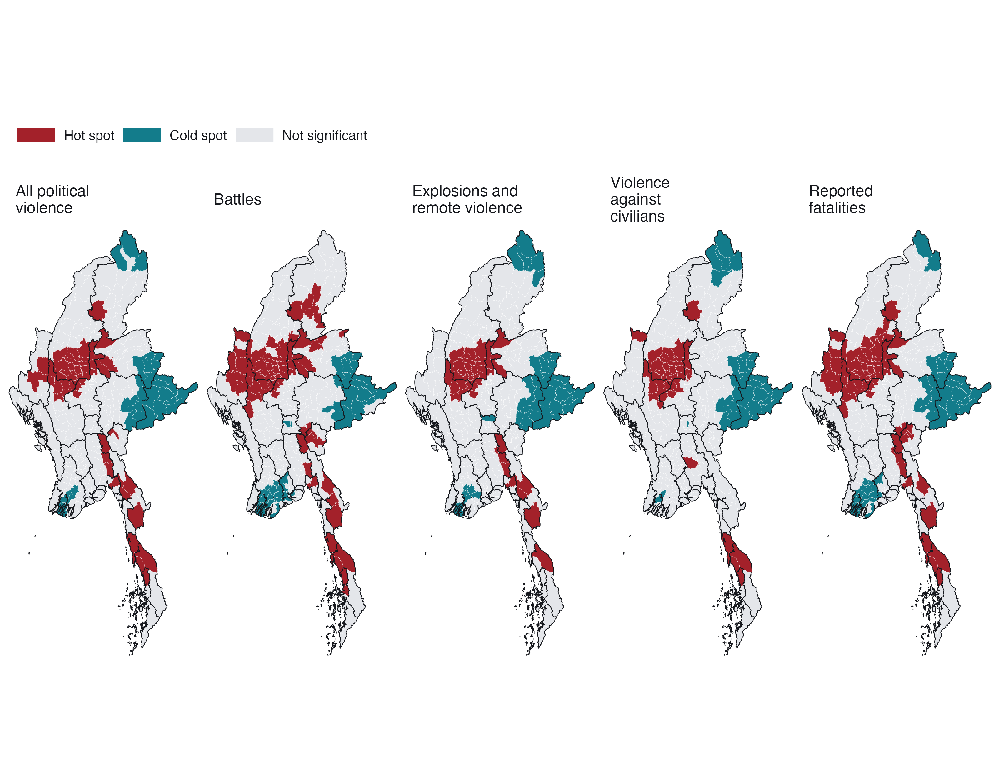
Gi* asks a narrower question than Local Moran’s I: is the neighbourhood total unusually high or low? Because it does not separate a township from its surroundings it cannot detect outliers, and here that costs little, because there are almost none. It agrees with the Local Moran maps township for township in most places: the dry zone and the southeastern border are hot, eastern Shan, the delta and Yangon are cold. Its value is as a check that the clusters do not depend on the choice of statistic, and as the quantity EHSA tracks through time.
7.4 How robust are the clusters?
| Variable | LISA, raw counts | LISA, 6-NN | Gi*, raw counts | Gi*, 6-NN | High-High (log / raw / 6-NN) | Significant (p<0.05 / FDR) |
|---|---|---|---|---|---|---|
| All political violence | 89% | 84% | 88% | 84% | 50 / 36 / 57 | 85 / 42 |
| Battles | 84% | 83% | 85% | 82% | 66 / 33 / 71 | 130 / 55 |
| Explosions and remote violence | 92% | 86% | 91% | 86% | 44 / 36 / 56 | 83 / 49 |
| Violence against civilians | 96% | 89% | 94% | 89% | 41 / 35 / 49 | 76 / 45 |
| Reported fatalities | 85% | 85% | 85% | 85% | 65 / 39 / 67 | 118 / 73 |
Between 82% and 96% of townships keep their class when the weights or the transformation change. The two changes move results in opposite directions. Raw counts shrink the High-High set, as expected, because only the most extreme townships and their immediate neighbours stand out. Nearest-neighbour weights enlarge it slightly, because a fixed six neighbours reach further in the dense centre than queen contiguity does. The core of the dry-zone cluster survives all three versions. What changes is its fringe.
The false discovery rate correction is the sterner test. Roughly half the townships significant at p < 0.05 survive it. Those that do are the cores of the clusters, not their margins, which is the honest way to read the maps above: the location of the clusters is not in doubt; the exact boundary of each is.
8 Emerging hot spot analysis
8.1 From a five-year snapshot to a time series
The local statistics above collapse nearly five years into one number per township. To see change, I compute Gi* for every township in every one of the 19 quarters, and then test each township’s 19-value series for a monotonic trend with the Mann-Kendall test. A positive and significant tau means the township’s neighbourhood has been getting hotter relative to the rest of the country; a negative one means it has been cooling.
code
mkm <- with_geo(E$mk |> filter(var == "pv")) |>
mutate(fill = if_else(sl < ALPHA, tau, NA_real_))
ggplot(mkm) +
geom_sf(aes(fill = fill), colour = PAL$border, linewidth = 0.05) +
geom_sf(data = states, fill = NA, colour = PAL$ink, linewidth = 0.3) +
scale_fill_gradient2(low = PAL$cool, mid = PAL$ground, high = PAL$accent_dk, midpoint = 0,
na.value = PAL$null, limits = c(-1, 1),
name = "Kendall's tau (p < 0.05)") +
scalebar_layer(bb) + north_layer(bb) +
coord_sf(expand = FALSE, datum = NA) + theme_map() +
theme(legend.key.width = unit(40, "pt"))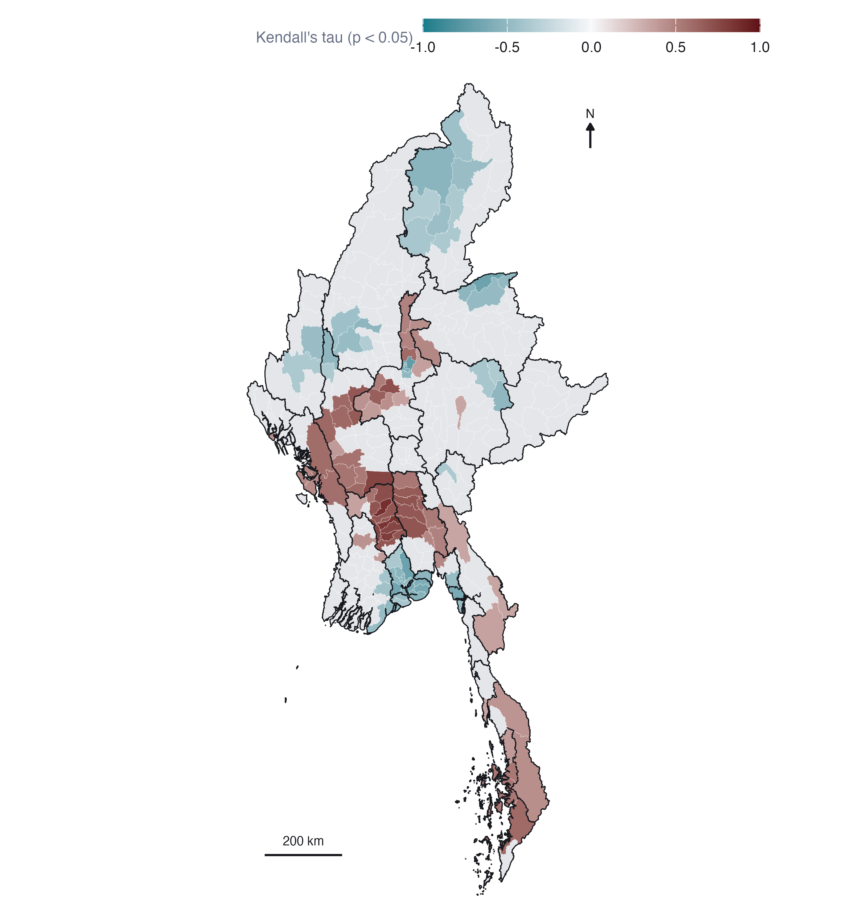
64 townships have a significantly rising Gi* and 83 a falling one. The falling trend is overwhelmingly one city: 44 of Yangon Region’s 45 townships are cooling, the signature of the urban resistance of 2021 being suppressed or pushed out. Smaller falling patches sit in Kachin (Myitkyina, Hpakant and their neighbours) and in the city townships of Mandalay.
The rising townships form a belt across the middle of the country: Bago West, Magway, Mandalay and Bago East, with Tanintharyi in the south and a handful in Rakhine. These are the places where the war arrived late, either as the dry-zone insurgency spread south and east out of Sagaing or as new fronts opened. Sagaing itself, the largest theatre, shows almost no significant trend, because it was hot from 2021 onward and stayed hot. A trend test cannot see a level, which is exactly the gap EHSA fills.
8.2 EHSA classification
EHSA combines the two pieces of information above: how often a township is a significant Gi* hot or cold spot, and whether its Gi* is trending. I use sfdep’s implementation, which also lets each township’s neighbourhood in quarter t include its neighbours in quarter t − 1, so a hot spot must be hot in space and persist in time. I set the significance used inside the classification rules to 0.05, as the brief does, instead of sfdep’s default of 0.01.
Checking the labels. sfdep 0.2.5 has a defect I found in Hands-on Exercise 6: emerging_hotspot_analysis() computes results in alphabetical order of location but labels them in the geometry’s order, so whenever the two differ, the classifications land on the wrong townships with no error. I sort the townships by PCode before building the cube, assert in the script that the orders match, and then check the labels against the independently computed mean Gi* of each township:
| Variable | Cold spot classes: Townships | Hot spot classes: Townships | No pattern: Townships | Cold spot classes: Mean Gi* | Hot spot classes: Mean Gi* | No pattern: Mean Gi* |
|---|---|---|---|---|---|---|
| Battles | 168 | 111 | 51 | -1.08 | 1.72 | 0.23 |
| Explosions and remote violence | 155 | 101 | 74 | -1.03 | 1.66 | 0.25 |
| All political violence | 138 | 131 | 61 | -1.31 | 1.56 | 0.07 |
| Violence against civilians | 138 | 105 | 87 | -0.95 | 1.29 | 0.13 |
code
em <- with_geo(E$ehsa |> filter(var == "pv")) |>
mutate(classification = factor(classification, EHSA_LEVELS))
present <- levels(droplevels(em$classification))
em2 <- bind_rows(
em |> mutate(panel = "All classes"),
em |> mutate(panel = "Mann-Kendall p < 0.05 only",
classification = if_else(p_value < ALPHA, classification, factor(NA, EHSA_LEVELS))))
ggplot(em2) +
geom_sf(aes(fill = classification), colour = PAL$border, linewidth = 0.04) +
geom_sf(data = states, fill = NA, colour = PAL$ink, linewidth = 0.2) +
facet_wrap(~panel) +
scale_fill_manual(values = EHSA_COLS()[present], breaks = present, labels = ehsa_label(present),
name = NULL, na.value = "#FFFFFF", drop = TRUE) +
coord_sf(expand = FALSE, datum = NA) + theme_map(base_size = 10) +
theme(legend.position = "right", legend.key.width = unit(12, "pt"), legend.key.height = unit(10, "pt"))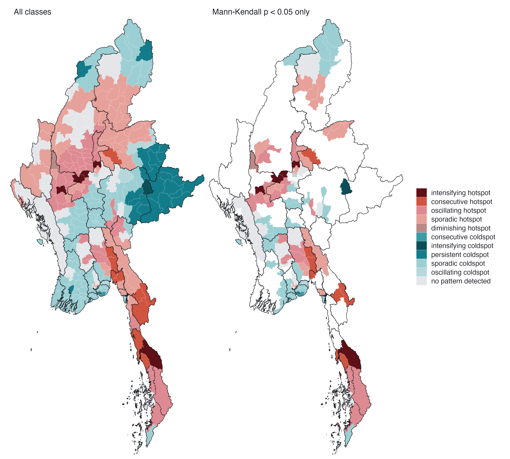
code
eb <- E$ehsa |> filter(var == "pv") |> count(classification) |>
mutate(classification = factor(classification, rev(EHSA_LEVELS)))
ggplot(eb, aes(n, classification, fill = classification)) +
geom_col(width = 0.7) +
geom_text(aes(label = n), hjust = -0.3, size = 3, colour = PAL$ink, family = "Helvetica") +
scale_fill_manual(values = EHSA_COLS(), guide = "none") +
scale_y_discrete(labels = ehsa_label) +
scale_x_continuous(expand = expansion(mult = c(0, 0.08))) +
labs(x = "Townships", y = NULL) + theme_ex02(grid = "x")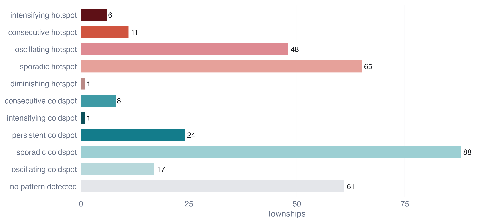
On the brief’s filter. The right-hand panel shows only townships whose Mann-Kendall p is below 0.05, as the brief asks. It is worth seeing what that removes. A persistent hot or cold spot is defined as one that is significant in at least 90% of periods without a significant trend, so the filter deletes every persistent class by construction: all 24 persistent cold spots vanish. The filter answers “where is the pattern changing?”, which is a good question, but it should not be read as “where is the pattern significant”. I interpret the left-hand panel and use the right-hand one to pick out the townships whose trajectory is statistically clear.
8.2.1 Interpreting the hot spot classes
Intensifying hot spots (6 townships: Madaya, Yesagyo, Myingyan, Dawei, Ngazun, Seikphyu). These are the townships that have been significant hot spots in at least 90% of quarters and whose Gi* is still rising. Five of the six are in the dry zone, along the Mandalay-Magway corridor south of Sagaing, the area into which the Sagaing insurgency has expanded; the sixth, Dawei, is the main town of northern Tanintharyi. For a peace-building organisation this is the most urgent class: established violence that is not plateauing. Madaya, just north of Mandalay city, stands out with nearly 800 events and a tau of 0.71.
Consecutive hot spots (11: Kawkareik, Kyaukkyi, Myawaddy, Kyaikto, Kyaukme, Launglon, Bilin, Kyainseikgyi, Yebyu, Thayetchaung, Shwegyin). Townships that became hot spots and have stayed hot for an unbroken run up to the latest quarter, after earlier periods of not being one. They trace one geographic line: the southeastern front from Kyaukkyi and Shwegyin in Bago East, through Kyaikto and Bilin in Mon, to Kawkareik, Myawaddy and Kyainseikgyi along the Thai border, and on into Tanintharyi. Much of it is territory contested by the Karen National Union, whose 2024 offensive reached Myawaddy, the main land crossing to Thailand. Kyaukme in northern Shan, on the Operation 1027 front, is the outlier. This is the clearest evidence in the analysis of a front that has moved into new townships and stayed there.
Oscillating hot spots (48, led by Sagaing (18), Magway (8), Mandalay (5)). Hot in the latest quarter but significantly cold at some earlier point. Most are in Sagaing and Magway, which seems paradoxical for the heartland of the war. The explanation is the start of the window. EHSA classifies on its own space-time Gi*, and in that series 41 of the 48 oscillating townships were significantly cold in 2021 Q1, the quarter of the coup, before the armed resistance existed, when the conflict was still carried by the border regions. The first quarter is also the only one with no preceding quarter to lag on, so its neighbourhood is purely spatial. So “oscillating” here means “transformed”: quiet farming townships that became the war’s centre. That is a substantive finding, and a warning about reading EHSA labels off a window that starts at a regime change.
Sporadic hot spots (65, led by Shan (North) (13), Kachin (9), Mandalay (8)). On-and-off hot spots that were never cold. Northern Shan and Kachin dominate: front lines that flare with offensives and go quiet under local ceasefires, as northern Shan did after the China-brokered truce of January 2024.
Diminishing hot spot. One township, Gangaw in Magway, hot in nearly every quarter but with a significantly falling trend.
No persistent hot spots. No township was a significant hot spot in 90% of the 19 quarters. Again the reason is the window: the first quarter or two predate the resistance in exactly the places that later became its core.
8.2.2 Interpreting the cold spot classes
Cold spots are 138 townships, more than the hot spots, and they are of two kinds. The persistent cold spots (24) are almost all in the Shan hills: 21 of them in eastern, northern and southern Shan. That area contains the Wa and Mongla zones, where I argued in the data audit that zeros partly measure silence. The consecutive cold spots (8) are all in Yangon: townships that were not significantly cold in the first years and have been continuously cold since, the same cooling the Mann-Kendall map shows. The single intensifying cold spot, Kunhing in southern Shan, records only eight events.
The large sporadic cold spot group (88) is mostly the Ayeyarwady delta and Yangon, the military’s most secure territory: places that are sometimes significantly quiet relative to the national level. It would be a mistake to read “cold spot” as “safe”. A cold spot in Yangon is a place where armed clashes are rare. It is also a place where repression takes forms ACLED records as arrests and strategic developments, which I excluded.
8.3 By event type
code
et <- with_geo(E$ehsa |> filter(var != "pv")) |>
mutate(var = var_lab(var), classification = factor(classification, EHSA_LEVELS))
present_t <- levels(droplevels(et$classification))
ggplot(et) +
geom_sf(aes(fill = classification), colour = PAL$border, linewidth = 0.04) +
geom_sf(data = states, fill = NA, colour = PAL$ink, linewidth = 0.18) +
facet_wrap(~var, nrow = 1, labeller = label_wrap_gen(18)) +
scale_fill_manual(values = EHSA_COLS()[present_t], breaks = present_t,
labels = ehsa_label(present_t), name = NULL) +
coord_sf(expand = FALSE, datum = NA) + theme_map(base_size = 10) +
theme(legend.position = "bottom", legend.key.width = unit(12, "pt"))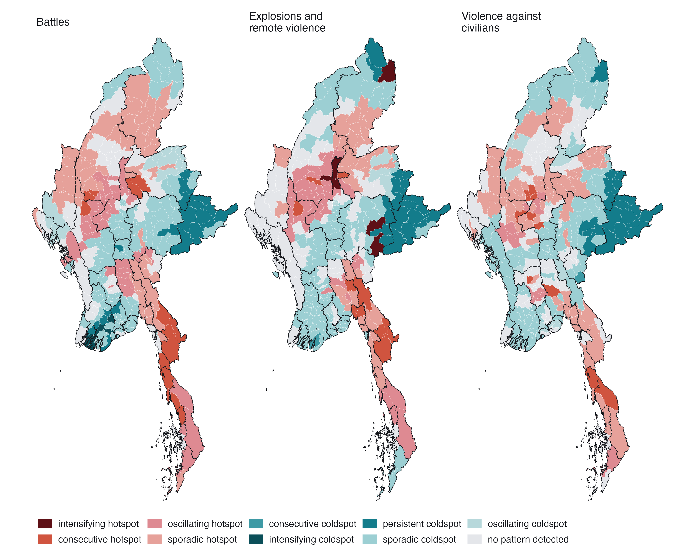
The three types tell slightly different stories. Battles produce the most consecutive hot spots, front by front, and eight intensifying cold spots, all in central Yangon and the delta, where armed clashes occurred in 2021 and then stopped almost entirely. Explosions and remote violence reproduce the dry-zone pattern of the total, with its own six intensifying hot spots, consistent with the air campaign concentrating on the resistance heartland. Violence against civilians has no intensifying hot spot, and the most townships with no pattern at all: it is diffuse in time, following raids and sweeps rather than fixed fronts.
8.4 Reading individual trajectories
code
pick <- c("Madaya", "Kawkareik", "Monywa", "Hlaingtharya (East)", "Gangaw", "Kunhing")
pick <- intersect(pick, tsp$TS)
tr <- G |> left_join(tsp_attr, by = "TS_PCODE") |>
filter(TS %in% pick) |>
left_join(ehsa_pv |> select(TS, classification), by = "TS") |>
mutate(lab = glue("{TS}: {ehsa_label(classification)}"))
ggplot(tr, aes(period, gi)) +
geom_hline(yintercept = 0, colour = PAL$rule) +
geom_vline(xintercept = c(COUP_DATE, OP1027_DATE), colour = PAL$muted, linewidth = 0.25, linetype = "22") +
geom_line(colour = PAL$muted, linewidth = 0.4) +
geom_point(aes(colour = classification, alpha = p_sim < ALPHA), size = 1.6) +
scale_colour_manual(values = EHSA_COLS(), guide = "none") +
scale_alpha_manual(values = c(`TRUE` = 1, `FALSE` = 0.25), guide = "none") +
facet_wrap(~lab, ncol = 3) +
scale_x_date(date_breaks = "2 years", date_labels = "%Y") +
labs(x = NULL, y = "Gi*") + theme_ex02(base_size = 10)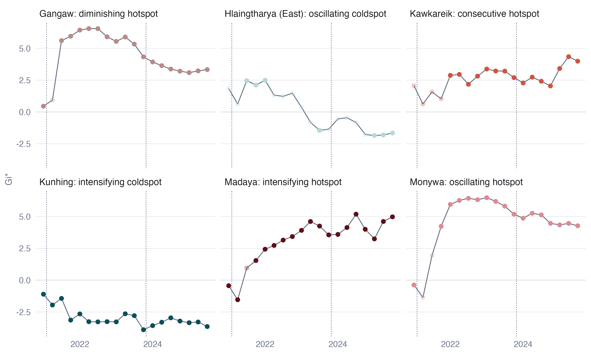
The trajectories make the labels concrete. Monywa and Madaya are both significantly cold in the coup quarter and hot in almost every quarter after it; Monywa’s Gi* levels off, Madaya’s keeps climbing, and that difference alone puts one in “oscillating” and the other in “intensifying”. Kawkareik is not significant through 2021 and then hot in every quarter from 2022 onward, an unbroken final run that makes it “consecutive”. Gangaw is hot almost throughout but drifting down. Hlaingtharya (East), an industrial township on Yangon’s western edge, is hot in 2021 and cold by the end. Kunhing in southern Shan is cold in all 19 quarters and getting colder.
8.5 Sensitivity of the classification
EHSA classes are less stable than the local statistics, and this needs saying plainly. Rebuilding the cube monthly keeps the same class for 62% of townships; using raw counts instead of log(1 + count) keeps it for 57%. At the coarser level of hot, cold or neither, agreement rises to 78% and 74%. Most of the movement is between neighbouring classes: sporadic hot spots in the quarterly cube become “no pattern” in the monthly one, because monthly noise makes an occasional significant quarter harder to reach. Intensifying hot spots either stay intensifying or become oscillating, never cold.
So I read the EHSA results at two levels. The broad geography (which townships are hot, which cold, which are trending) is robust. The fine distinctions between sporadic, oscillating and consecutive depend on parameter choices and should be used to prompt a look at the trajectory, not quoted as fact.
9 Value-added analysis: does violence spread?
9.1 The question
EHSA describes where hot spots appear and persist. It does not say how a quiet township becomes violent. For a peace-building organisation that is the question that matters for planning: if violence spreads to neighbours, the townships to prepare are the quiet ones on the edge of active areas; if it jumps or appears independently, adjacency is no guide.
The conflict literature distinguishes contagious diffusion, where violence spreads to adjacent places, from relocation, where it moves and leaves its origin quiet (Schutte and Weidmann 2011). I test the first with a spatial Markov chain (Rey 2001).
9.2 Method
Each township-quarter is classified Active if it records at least 3 political-violence events (one a month, which separates sustained activity from an isolated incident) and Quiet otherwise. Each township’s neighbourhood in that quarter is classified by the share of its queen neighbours that are active: none, some (under half), or most (half or more). I then estimate the probability of being Active in the next quarter, conditional on the township’s own state and its neighbourhood. That gives 5,940 observed transitions.
If violence diffuses contagiously, a quiet township’s chance of becoming active should rise with its neighbours’ activity.
9.3 Result
code
pt <- D$phase_tab |> mutate(ctx = factor(ctx, D$ctx_lab))
tb2 <- D$tab |> mutate(ctx = factor(ctx, D$ctx_lab))
ggplot(tb2, aes(ctx, p_active_next)) +
geom_col(fill = PAL$accent_lt, width = 0.62) +
geom_point(data = pt, aes(shape = phase, colour = phase), size = 2.4,
position = position_dodge(width = 0.38)) +
geom_text(aes(label = glue("n = {fmt_n(n)}"), y = 0.02), vjust = 0, size = 2.6,
colour = PAL$ink, family = "Helvetica") +
facet_wrap(~ factor(from, c("Quiet", "Active"), c("Quiet this quarter", "Active this quarter"))) +
scale_colour_manual(values = c(PAL$cool, PAL$accent_dk), name = NULL) +
scale_shape_manual(values = c(16, 17), name = NULL) +
scale_y_continuous(labels = label_percent(), limits = c(0, 1)) +
scale_x_discrete(labels = c("None", "Some", "Most")) +
labs(x = "Neighbours active this quarter", y = "Active next quarter") + theme_ex02()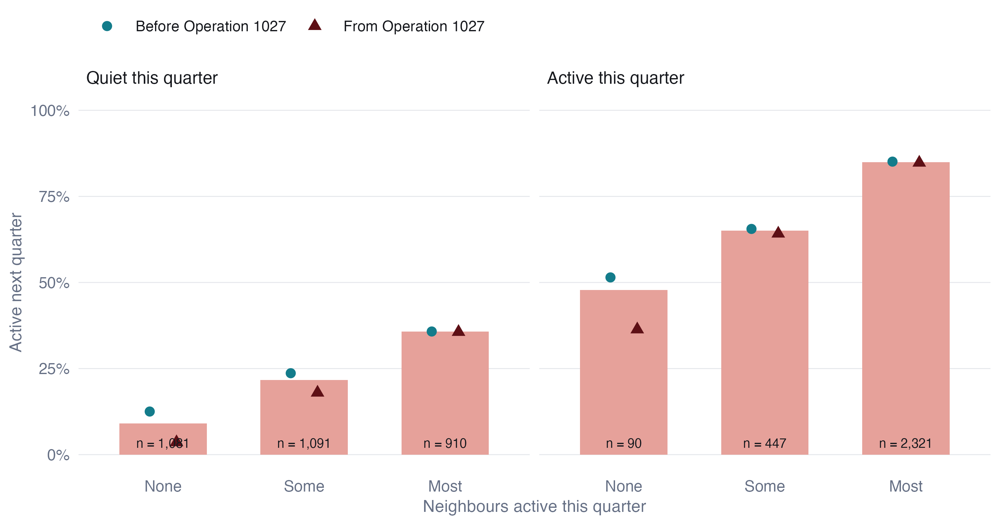
A quiet township with no active neighbour becomes active in the next quarter 9% of the time. With most neighbours active, the figure is 36%, about four times higher. The same gradient appears for active townships: an active township with no active neighbours stays active about half the time, but one surrounded by fighting stays active 85% of the time. The likelihood-ratio test of homogeneity across neighbourhoods rejects decisively (G² = 353, 4 df).
9.4 Is it contagion, or just a violent region?
The likelihood-ratio test assumes every transition is independent, which is false: each township contributes 18 transitions, and neighbouring townships share conditions. Three checks address this.
Spatial permutation. I kept every township’s full 19-quarter history intact and shuffled which location each history sits at, 499 times, recomputing the onset gap each time. This destroys spatial arrangement while preserving every township’s temporal persistence.
code
ggplot(tibble(g = D$gap_perm), aes(g)) +
geom_histogram(bins = 40, fill = PAL$null, colour = PAL$border) +
geom_vline(xintercept = D$gap_obs, colour = PAL$accent, linewidth = 0.8) +
annotate("text", x = D$gap_obs, y = Inf, vjust = 1.5, hjust = 1.05, size = 3,
label = glue("observed {round(100 * D$gap_obs)} points"), colour = PAL$accent,
family = "Helvetica") +
scale_x_continuous(labels = \(x) paste0(round(100 * x), " pts")) +
labs(x = "Onset gap under random placement", y = NULL) + theme_ex02()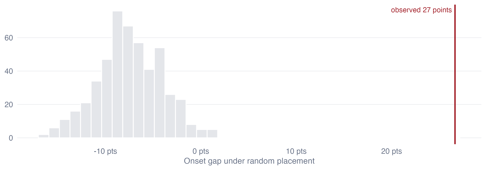
Not one permutation reaches the observed gap (p < 0.002). Under random placement the gap is centred slightly below zero, because shuffling places busy townships next to quiet ones.
Controlling for region and time. A logistic model of onset among quiet townships with fixed effects for each of the 18 states and regions and for each quarter, plus the township’s own activity in the previous year, still finds the neighbourhood effect (Table 8). A township with most neighbours active has 4.1 times the odds of onset of one with none, with a township-cluster bootstrap interval of 2.8 to 6.6. The effect cannot be “this is Sagaing” or “this was a violent quarter”, because those are held constant.
| Term | Odds ratio | 95% interval |
|---|---|---|
| Some neighbours active (vs none) | 2.23 | 1.5 to 3.27 |
| Most neighbours active (vs none) | 4.11 | 2.79 to 6.55 |
| Own activity in previous four quarters | 3.44 | 2.58 to 4.45 |
Threshold. The gradient holds whatever “active” means:
| Active means at least | Township-quarters active | No neighbour active | Some | Most | Ratio |
|---|---|---|---|---|---|
| 1 event per quarter | 69% | 20% | 34% | 47% | 2.4 |
| 3 events per quarter | 48% | 9% | 22% | 36% | 3.9 |
| 6 events per quarter | 34% | 7% | 16% | 28% | 4.3 |
9.5 What changed with Operation 1027
Splitting the transitions at Operation 1027 (the points in Figure 11) shows a chain that is not stationary, and the way it changes is informative. Before the offensive, a quiet township with no active neighbours ignited 13% of the time; from 2023 Q4 onward, 4%. Onset next to active neighbours did not change at all (36% before, 36% after). Isolated outbreaks have become rare. New violence now appears almost only at the edge of existing violence. That is what a war of consolidated fronts and contested territory looks like, as opposed to the scattered uprising of 2021 and 2022.
9.6 Does the neighbourhood help predict?
A statistically significant effect is not the same as a useful one. I fitted the onset model on transitions up to mid-2024 and scored the four later quarters, comparing it with a model that knows only each township’s own history and state.
| Model | AUC | Test transitions | Onsets |
|---|---|---|---|
| Own history and state | 0.726 | 669 | 131 |
| Plus neighbourhood | 0.750 | 669 | 131 |
The neighbourhood adds a modest 0.024 to the AUC. Most of what predicts onset is already known to anyone watching a township’s own recent history. The neighbourhood is a useful second signal, not a forecasting system, and I would not present it as more than that.
9.7 Quiet townships on the edge
code
wm <- with_geo(D$watch |> select(TS_PCODE, share, p_onset))
ggplot(wm) +
geom_sf(aes(fill = share), colour = PAL$border, linewidth = 0.05) +
geom_sf(data = states, fill = NA, colour = PAL$ink, linewidth = 0.3) +
scale_fill_gradientn(colours = c("#EEF6F7", PAL$cool_lt, "#E7B9A9", PAL$accent),
na.value = "#C9CBD0", labels = label_percent(),
name = "Quiet townships: share of neighbours active, 2025 Q3") +
scalebar_layer(bb) + north_layer(bb) +
coord_sf(expand = FALSE, datum = NA) + theme_map() +
theme(legend.key.width = unit(40, "pt"))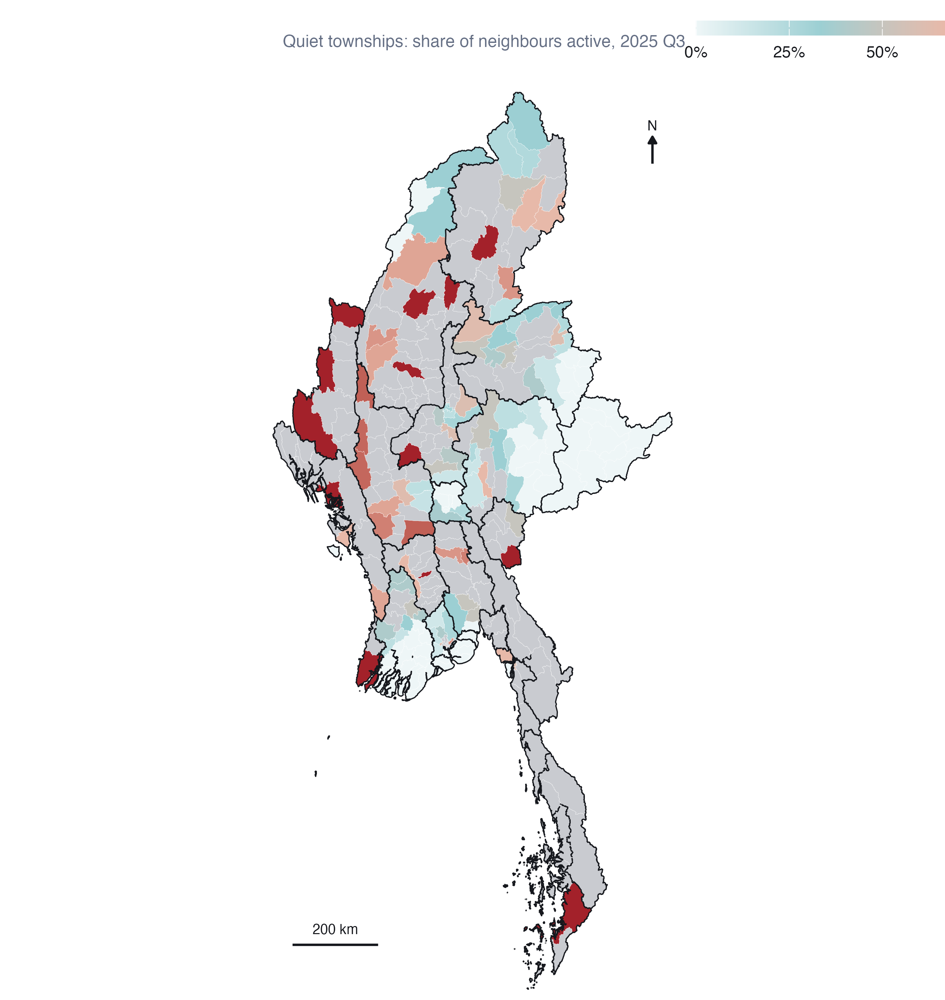
In the last observed quarter, 174 townships were quiet, and 54 of them had most of their neighbours active. They cluster in Magway (7), Sagaing (6), Kachin (5), Mandalay (5): the margins of the dry-zone and southern fronts. The map is a list of where the diffusion result says to look, not a forecast, and it inherits every limitation of ACLED’s coverage.
10 Integrated findings and discussion
The methods agree on one picture.
Where. Myanmar’s armed conflict since the coup is centred on the dry zone of Sagaing, Magway and Mandalay, with a second belt down the eastern border from Bago East to Tanintharyi. Local Moran’s I, Gi*, every event type and every robustness check put the core in the same place. There are no isolated violent townships; violence comes in neighbourhoods.
How it is changing. The urban resistance of 2021 is gone from the map; Yangon is cooling almost everywhere. The war has deepened in the dry zone, where the intensifying hot spots are, and has opened and held new fronts along the southeast, where the consecutive hot spots run from Kyaukkyi to Myawaddy. Rakhine and northern Shan are on-and-off theatres that flare with offensives and quiet with ceasefires. And the means of violence changed: the military’s air campaign grew more than thirtyfold between 2021 and 2024, and explosions and remote violence now outnumber battles.
How it spreads. Violence spreads to neighbours. A quiet township beside active ones is about four times as likely to become active next quarter as an isolated one, and that holds after accounting for region, time and the township’s own history. Since Operation 1027 almost all new violence has appeared next to existing violence.
What I would not claim. That the cold spots are peaceful: some are well reported and secure; others, like the Wa zones, are under-reported. That fine EHSA labels are stable: the hot/cold geography is, the sub-classes are not. That the diffusion model forecasts: it ranks quiet townships modestly better than history alone.
11 Peace-building implications
These follow from the analysis. They are not policy recommendations; they are what the evidence would support if a peace-building organisation asked.
Prioritise the intensifying hot spots for protection and humanitarian access, particularly Madaya, Myingyan, Seikphyu, Yesagyo and Ngazun in the dry zone, and Dawei. Their violence is established and still rising. Civilian protection, mine-risk education and access negotiation are most needed where conflict is neither new nor ending.
Watch the quiet edges, not the centres. The diffusion result says onset is concentrated in quiet townships next to active ones. Early-warning monitoring and preparedness (displacement planning, pre-positioned supplies) belong in the townships in Figure 13, which are most numerous in Magway, Sagaing, Kachin and Mandalay, before they light up.
Treat the southeastern front as a moving front. The consecutive hot spots from Bago East to the Thai border are places that became hot and stayed hot. Cross-border humanitarian routes from Thailand matter most here.
Plan for air-strike exposure where there are no battles. An air strike lands where the military chooses, which need not be where ground fighting is. Civilian protection in the dry zone cannot be planned from battle maps alone.
Do not read the eastern Shan cold spot as an absence of risk. It partly reflects how little is reported from Wa and Mongla territory. Field verification should come before any programme decision that depends on calm there.
12 Limitations
ACLED measures reporting, not violence. Every count in this analysis is a count of events reported in sources ACLED monitors. Reporting is uneven: dense near media and civil-society networks, thin in ceasefire enclaves, contested hills and places under communication blackout. Hot spots partly reflect where violence is visible. The Wa and Mongla zeros are the clearest example; others are likely.
Counts, not rates. I have no reliable township population or exposure denominator for 2021-2025. Large or populous townships may record more events for reasons other than intensity. Gi* and Local Moran’s I compare neighbourhoods, which softens this, but does not remove it.
The modifiable areal unit problem. Townships range from under 1 km² in central Yangon and Mandalay to over 12,000 km². Clusters at township scale need not exist at village tract or district scale. I chose townships because programmes operate at that level, not because the clusters are scale-free.
Contiguity is a simplification. Queen contiguity treats every shared border as an equal channel. Mountain ranges, rivers and front lines make some borders far more permeable than others. The nearest-neighbour check shows the core results are not sensitive to the definition, but none of these definitions is the true one.
EHSA and the window. EHSA classes depend on the study window. Starting in January 2021, one month before the coup, shapes the “oscillating” labels in the dry zone. And with 19 quarters, the 90% rule for persistent classes requires a township to be significant in at least 18 of them, which is a high bar.
Multiple testing. Maps at p < 0.05 contain false positives. About half of the significant townships survive a false discovery rate correction; those are the cores of the clusters.
The diffusion model is descriptive. It shows that onset is concentrated next to existing violence after controlling for region and time. It does not prove that violence in one township causes violence in its neighbour: an advancing front and a contagious process look alike at quarterly resolution. The out-of-sample gain is small, and the in-sample probabilities in Figure 13 are not validated forecasts.
13 Reproducibility
The analysis runs as five scripts that cache to data/derived/; this page and the executive summary only read those caches.
| Script | Does | Output |
|---|---|---|
| R/00_config.R | Every parameter: window, event types, precision rule, CRS, weights, permutations, thresholds | - |
| R/01_prepare.R | Fetches MIMU boundaries if absent, audits and cleans ACLED, joins events to townships, builds quarterly and monthly cubes | prepared.rds |
| R/02_lmsa.R | Queen weights with island fix, global Moran’s I, Local Moran’s I, Gi*, sensitivity | lmsa.rds |
| R/03_ehsa.R | Gi* per quarter, Mann-Kendall, EHSA with location check, monthly and raw-count sensitivity | ehsa.rds |
| R/03b_ehsa_gi.R | Reruns the all-violence EHSA keeping its space-time Gi* series, and confirms the labels are identical | ehsa_gi.rds |
| R/04_diffusion.R | Spatial Markov chain, permutation test, fixed-effects model, out-of-sample check, watch list | diffusion.rds |
The ACLED file must be placed at data/raw/aspatial/ by hand (see the README); everything else runs end to end with Rscript. All random procedures are seeded (626).
R and package versions
pk <- c("sf", "sfdep", "spdep", "dplyr", "tidyr", "ggplot2", "Kendall", "patchwork")
cat(R.version.string, "\n")R version 4.5.3 (2026-03-11) R and package versions
cat(paste(pk, vapply(pk, \(p) as.character(packageVersion(p)), ""), collapse = "\n"))sf 1.1.1
sfdep 0.2.5
spdep 1.4.2
dplyr 1.2.1
tidyr 1.3.2
ggplot2 4.0.3
Kendall 2.2.2
patchwork 1.3.214 References
- ACLED. Armed Conflict Location & Event Data Project codebook. acleddata.com.
- Anselin, L. (1995). Local indicators of spatial association: LISA. Geographical Analysis, 27(2), 93-115.
- Bickenbach, F. and Bode, E. (2003). Evaluating the Markov property in studies of economic convergence. International Regional Science Review, 26(3), 363-392.
- Getis, A. and Ord, J. K. (1992). The analysis of spatial association by use of distance statistics. Geographical Analysis, 24(3), 189-206.
- Kam, T. S. R for Geospatial Data Science and Analytics. r4gdsa.netlify.app.
- Mack, Z. W. V. and Kam, T. S. (2018). Is there space for violence? A data-driven approach to the exploration of spatial-temporal dimensions of conflict. Proceedings of the 2nd ACM SIGSPATIAL Workshop on Geospatial Humanities, 1-10.
- Myanmar Information Management Unit. Township boundaries, PCode release 9.4. geonode.themimu.info.
- Parry, J. and Locke, D. (2023). sfdep: Spatial dependence for simple features. R package.
- Rey, S. J. (2001). Spatial empirics for economic growth and convergence. Geographical Analysis, 33(3), 195-214.
- Schutte, S. and Weidmann, N. B. (2011). Diffusion patterns of violence in civil wars. Political Geography, 30(3), 143-152.